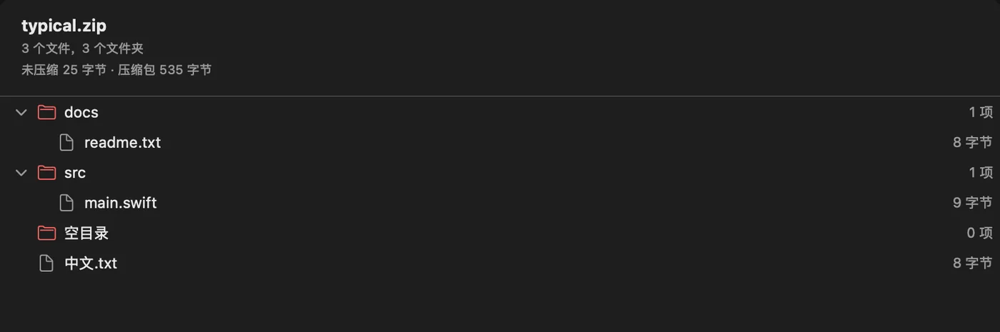
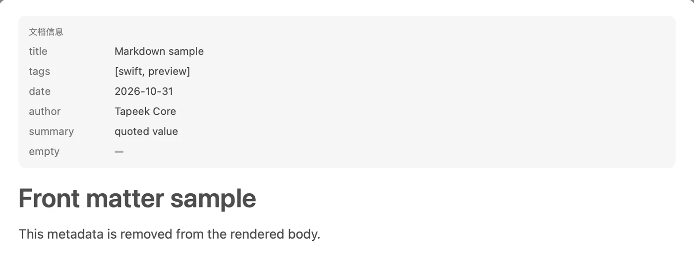

Tapeek 住在
Quick Look 里。
不用先打开 Tapeek。选中文件按空格，预览交给 Tapeek，文件留在原处，只读。
Finder
同一套动作，两种文件。
点一下
# Tapeek Markdown Sample
This file exercises the GFM rendering path used by README files.
## Text styles
**Bold text**, *italic text*, ~~strikethrough~~, `inline code`.
## Lists
- First item
- Second item
- Nested item
- [x] Completed task
- [ ] Pending task
typical.zip
ZIP 归档 · 按空格查看目录

同一份 README，现在是纯文本。
Markdown 排成文档，
ZIP 摊成目录树。
格式不同，动作一样：选中，按空格。
Markdown
README、笔记、草稿，按 GFM 排好版再给你看。
- GFM 排版 标题、列表、任务、表格、代码和引用，层级清楚。
- front matter 收进文档信息卡片，不混进正文。
- 跟着系统走 浅色 / 深色自动切换；500 KB 文档约 1 秒出现。

ZIP
解压之前，先看清包里有什么。
- 目录树 文件大小、条目总数、压缩前后体积。
- 异常状态 加密、空包、损坏、截断，都有明确提示。
- 中文与 ZIP64 正常显示；只读，不解压不写盘。
小，是设计出来的。
没有账号，没有后台，没有网络请求。解析只在本机，只读。
- App 体积
- 2.9 MB
- 预览扩展 2.7 MB
- 500 KB 文档首屏
- 1 秒内
- 优化前是 12 秒空白
- 网络请求与解压产物
- 0
- 不联网，也不写用户目录
装一次，以后都按空格。
适用于 macOS 27 与 Apple 芯片。App 2.9 MB，不需要账号。
-
放进「应用程序」
打开
Tapeek-0.2.0.dmg，把 Tapeek 拖到 Applications（/Applications）。也可以下载 ZIP，解压后移动到相同位置。 -
启用 Quick Look
系统设置 › 通用 › 登录项与扩展 › Quick Look，打开 Tapeek。
-
选中文件，按空格
.md变成文档，.zip变成目录树。
xattr -dr com.apple.quarantine /Applications/Tapeek.app
open /Applications/Tapeek.app只移除这一个 App 的隔离标记，不改动其他文件。
第一次可能要多一步
Tapeek 用 ad-hoc 签名，没有经过 Apple 公证。首次打开若被拦下，右键 App 选「打开」，或用命令移除隔离标记。
如安装到 ~/Applications，请把命令中的 App 路径改为 ~/Applications/Tapeek.app。
这些不在第一版里
- 同目录图片Quick Look 沙盒通常拒绝读取，只显示占位和 alt。
- 加密 ZIP只列目录，不支持输入密码。
- 其他格式分卷 ZIP、RAR、7z、TAR 和自解压 ZIP64 都不支持。
- 旧式编码GBK 等文件名只能启发式识别，偶尔会误判。
- Markdown 语法没有语法高亮、公式、Mermaid、脚注跳转和文内搜索。
- 超大文件超过 2 MiB 的 Markdown 不预览；ZIP 最多显示 20,000 条。